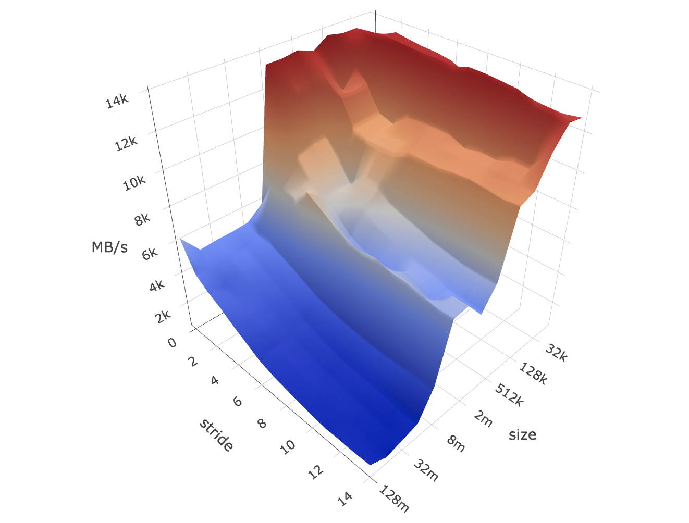

A live demo of memory mountain.
The memory mountain shows the throughput achieved by a program repeatedly reading elements from an array of N elements, using a stride of S (i.e., accessing elements 0, S, 2S, 3S, ..., N-1). The performance, measured in megabytes (MB) per second, varies according to how many of the elements are found in one of the processor's caches. For small values of N, the elements can be held in the L1 cache, achieving maximum read throughput. For larger values of N, the elements can be held in the L2 cache, and the L1 cache may be helpful for exploiting spatial locality for smaller values of S. For large values of N, the elements will reside in main memory, but both the L1 and L2 cache can improve performance when S enables some degree of spatial locality.
The result is heavily dependant on the browser's JavaScript engine, unlike the original C implementation, where in-depth low-level optimization is guaranteed. I obtained the best result with Chrome on my Mac, from which L1-L2-L3-DRAM hierarchy can be seen distinctly:
The original C implementation defaults to a CPU clock measurement using x86 Time Stamp Counter (TSC), which again is not possible on the browser (even with WebAssembly). So I take an alternative approach based on time measurement function performance.now(), which claims to provide sub-milliseconds resolution. Unfortunately, most browsers nowadays have reduced the time precision by a large margin, in order to prevent timing attacks and fingerprinting. I have no other options but to repeat a great deal of times for a decent result, and that's why it's running a little bit slower.